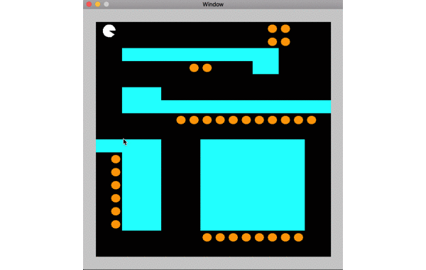
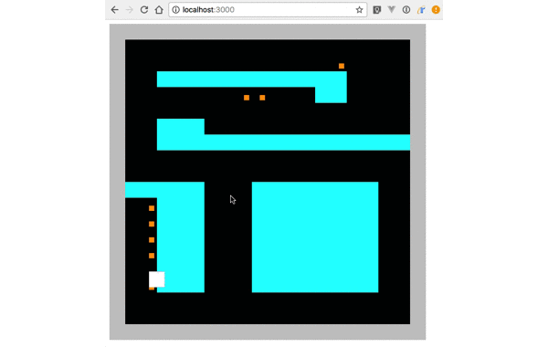
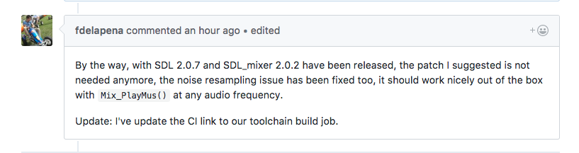

Rustからwasmを作成してみた話
caution!
発表内容は発表者の独自調査によるものです
間違ってたらすみません
tl;dr;
現状Emscriptenでwasmを作成したいのであれば
LLVMやemccの知識が大なり小なり必要
はじめに
勉強ついでに作ったRustのゲームEmscriptenでWeb Assembly(wasm)に変換してみました
出てくる単語の概要
SDL2
ゲームエンジンとして使用
Rust
wasmの変換元のアプリを作るのに使用
Cargo
Rustからwasmを作成するのに使用
Emscripten
wasmに変換するのに使用
LLVM
コンパイラ基盤。中間コード作成に使用
SDL2
Simple DirectMedia Layer 2
例. オーディオ, キーボード, マウス etc...
Rust
今回重要なこと
Cargo
Rustのビルドシステム兼パッケージマネージャ
以下のような形でビルド対象を変更することができる
(Rust付属のrustcでもできる)
# asm.js
$ cargo build --target asmjs-unknown-emscripten
# wasm
$ cargo build --target wasm32-unknown-emscripten
Rust単体でwasmのビルドは不可
bit codeからwasmに変換するEmscriptenが必要
Emscripten
bit codeからasm.jsやwasmに変換できるコンパイラー

Emscripten Compiler Frontend (emcc)
$ emcc [options] file...
Emscripten Ports
Emscripten用の便利ライブラリ集
$ export EMMAKEN_CFLAGS="-s USE_SDL=2"
LLVM
Rust製
wasm
色々おかしい
BGM、効果音がない
そもそも円じゃない
問題点
=> emccが正しく変換できていないっぽい
=> 必要な依存ライブラリがEmscripten Portsにない
BGM、効果音がない
ちなみに…
作成したアプリはtxtファイルからmapを作成している
任意にmapは変更できる
=> ファイルを読み込むこと自体はできている模様
FS
$ emcc file.cpp -o file.html --preload-file ../../asset_dir@/
emcc単体ではRustからwasmに変換できない…
rustcやcargoなどで中間コードを作成する必要がある
しかし…
cargoから--preload-fileのオプションをemccに渡せない
=> js上からファイルを読み込ませる
var Module = {
prerun: [function () {
FS.createPreloadedFile(
'/',
'text1.txt',
'/text2.txt',
true,
false
)
}]
}
公式の見解は?
Emscripten用のビルドスクリプトは作ってくれている新しいversionがrust-sdl2に取り込まれれば動くだろう
そもそも円じゃない
Emscripten Portsに
線や円などを描画するライブラリ「SDL2_gfx」がない
=> SDL2_gfxを外してSDL2が描画できる矩形で代用
自力でemscripten用のビルドスクリプトを書くしかない
まとめというか感想
まとめというか感想